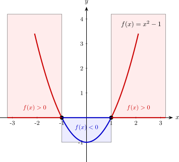
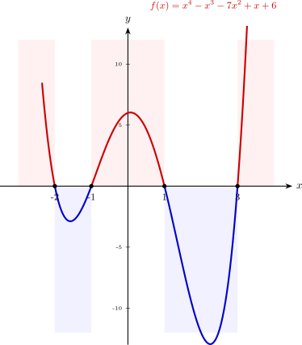

Càlculs bàsics per trobar dominis
Per trobar el domini d'una funció, sovint ens cal determinar quins valors d'\(x\) fan que una expressió sigui zero o positiva. Això es redueix a resoldre equacions i inequacions, i molts cops, aquestes són polinòmiques.
1. Resolució d'equacions polinòmiques (trobar zeros del polinomi)
Trobar els zeros d'un polinomi \(P(x)\) és essencial per a les funcions racionals \(f(x) = \displaystyle\frac{Q(x)}{P(x)}\). En aquests casos, el domini són tots els reals tret dels zeros del polinomi: \(Dom(f)=\mathbb{R} \setminus \{x \mid P(x)=0\}\).
Passos per resoldre equacions polinòmiques:
- Factor comú: Si el polinomi no té terme independent, treiem factor comú \(x\) (això vol dir que \(\mathbf{x=0}\) és solució).
- Equacions de 2n grau: Si el que tenim o ens queda és una equació de 2n grau, utilitzem la fórmula general:
- Ruffini: Per a polinomis de grau 3 o superior, fem servir el mètode de Ruffini per trobar les arrels del polinomi.
Exemple:
Volem trobar el domini de \(f(x) = \displaystyle\frac{1}{x^2 - 4}\).
Primer busquem els zeros de \(p(x)=x^2-4\) per excloure'ls del domini:\[x^2 - 4 = 0\implies x =\pm \sqrt{4}=\pm 2\]Resultat: \(Dom(f) = \mathbb{R} \setminus \{-2, 2\}\).
Exemple:
Volem trobar el domini de \(f(x) =\displaystyle \frac{5}{x^3 - 4x^2 + 4x}\)
Busquem els valors que anul·len el denominador per excloure'ls del domini:
\[x^3 - 4x^2 + 4x = 0\]Pas 1: Extreure factor comú Com que no hi ha terme independent, podem treure la \(x\):
\[x \cdot (x^2 - 4x + 4) = 0\]D'aquí ja obtenim la primera solució: \(x_1 = 0\).
Pas 2: Resoldre el parèntesi (2n grau) Ara treballem amb \(x^2 - 4x + 4 = 0\):
\[x = \frac{-(-4) \pm \sqrt{(-4)^2 - 4 \cdot 1 \cdot 4}}{2 \cdot 1} = \frac{4 \pm \sqrt{16-16}}{2} = \frac{4 \pm 0}{2} = 2\]Obtenim una solució doble: \(x_2 = 2\).
Resultat: El domini són tots els reals menys els punts on el denominador és zero.
\[Dom(f) = \mathbb{R} \setminus \{0, 2\}\]
2. Resolució d'inequacions polinòmiques
Les inequacions són la clau per trobar el domini de les funcions irracionals o les logarítmiques:
- Si \(f(x) = \sqrt[n]{P(x)}\) amb \(n\) senar, necessitem que \(P(x) \ge 0\)
- Si \(g(x) = \log_b{Q(x)}\) , necessitem que \(Q(x) > 0\).
Estudi per intervals (signe del polinomi)
Per resoldre inequacions podem seguir el següent procediment:
- Trobar els zeros del polinomi (com hem fet a l'apartat anterior).
- Dividir la recta real en intervals usant aquests zeros com a punts de tall.
- Trobar el signe de la funció en cada interval. Per fer-ho prenem un valor qualsevol, \(x_0\), de cada interval i mirem si \(f(x_0)\) és positiu (\(+\)) o negatiu (\(-\)).
Amb això trobarem tots els intervals on el polinomi pren valors positius o negatius. Els extrems de cada interval són els punts on el polinomi val zero.
Exemple
Volem trobar el domini de \(f(x) = \sqrt{x^2 - 1}\).
El domini seran els valors que compleixin: \(p(x)=x^2 - 1 \ge 0\):Procediment:
- Trobem els zeros de \(x^2-1\) \(\implies\) \(x \in \{-1,1\}\)
- Dividim la recta reals en intervals a partir dels zeros trobats: \((-\infty, -1)\), \((-1, 1)\) i \((1, +\infty)\).
- Estudiem el signe en cada interval prenent un punt qualsevol de l'interval i mirant quin signe pren:
- Per a \(x = -2\rightarrow\) \(p(-2)=(-2)^2 - 1 = 3 > 0 \rightarrow\) \((+)\)
- Per a \(x = 0\rightarrow\) \(p(0)=0^2 - 1 = -1 < 0 \rightarrow\) \((-)\)
- Per a \(x = 2\rightarrow\) \(p(2)=2^2 - 1 = 3 > 0\rightarrow\) \((+)\)
Gràficament:

Resultat: El domini són els intervals on es prenen valors positius o zero: \(Dom(f) = (-\infty, -1] \cup [1, +\infty)\).
Exemple: funció radical amb polinomi de grau 4. Ruffini i inequació d'intervals
Trobem del domini de: \(f(x) = \sqrt{x^4 - x^3 - 7x^2 + x + 6}\)
Com que és una arrel quadrada (arrel d'índex parell), el contingut ha de ser positiu o zero: \(P(x) \ge 0\). La primera part del problema és trobar els zeros del polinomi:
Pas 1: Trobar els zeros amb Ruffini
Provem amb \(x = 1\):
1 -1 -7 1 6 1 1 0 -7 -6 1 0 -7 -6 0 \(\leftarrow\) Provem amb \(x = -1\) sobre el resultat anterior:
1 0 -7 -6 -1 -1 1 6 1 -1 -6 0 \(\leftarrow\) Observem que ja hem trobat dos zeros \(\mathbf{x_1 = -1, \,\, x_2 = 1}\) i ens queda estudiar el polinomi \(x^2 - x - 6\)
Pas 2: Equació de 2n grau
Ens cal resoldre \(x^2 - x - 6 = 0\). Apliquem la fòrmula:\[x =\displaystyle \frac{1 \pm \sqrt{1 - 4(1)(-6)}}{2} = \frac{1 \pm 5}{2} \implies \mathbf{x_3 = 3, \,\, x_4 = -2}\]Un cop hem trobat totes les arrels del polinomi, ens toca trobar en quins intervals la funció pren valors positius o zero:
Pas 3: Estudi del signe (intervals) Dividim la recta real amb intervals a partir dels zeros obtinguts: \(\{-2, -1, 1, 3\}\) i mirem el signe de \(P(x)\) en cada interval:
Interval Punt de prova Substitució en \(P(x)\) Signe Inclòs? \((-\infty, -2)\) \(x = -3\) \(P(-3) = 48\) \(+\) SÍ \((-2, -1)\) \(x = -1.5\) \(P(-1.5) = -1.3\) \(-\) NO \((-1, 1)\) \(x = 0\) \(P(0) = 6\) \(+\) SÍ \((1, 3)\) \(x = 2\) \(P(2) =-12\) \(-\) NO \((3, +\infty)\) \(x = 4\) \(P(4) = 90\) \(+\) SÍ Gràficament:

Resultat:
Unim els intervals on el signe és positiu o zero (on existeix l'arrel).
\[Dom(f) = (-\infty, -2] \cup [-1, 1] \cup [3, +\infty)\]
3. Resum d'operacions segons el tipus de funció
| Tipus de Funció | Condició de Domini | Operació Matemàtica |
|---|---|---|
| Racional: \(\displaystyle\frac{Q(x)}{P(x)}\) | \(P(x) \neq 0\) | Equació |
| Irracional: \(\sqrt{P(x)}\) | \(P(x) \ge 0\) | Inequació |
| Logarítmica: \(\log(P(x))\) | \(P(x) > 0\) | Inequació (estricta) |